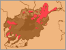

 Mountain Tajiks
Though Tajiks share many musical and cultural affinities with Uzbeks, they have their own aesthetic attachments and preferences. In Kataghan, a central zone, you can hear the Tajik sound, and as you move farther east to the narrow Kokcha River valley and the increasingly high mountains of the Pamir range, the Uzbek presence recedes and more local mountain Tajik styles predominate, shared with populations across the border in Tajikistan. Badakhshan has various remote regions where unique languages are spoken.
The soundclips suggest some of this variation. In the Faizabad bazaar, Safar Mahdi played me the only tunes on the local flute, or tula, that I heard, encouraged by a small crowd of men. He called one piece boland, "high," the other payan, "low," but based on which fingerholes he used, rather than register. He used the term felak for the tunes, a very Badakhshani word from the Persian that means "the heavens," but also "fate" or "destiny," alongside other connotations. Many songs and tunes with this name stem from a common aesthetic that might remind an American listener of what they call "the high lonesome sound" in Appalachia, with similar themes of displacement, lost love, suffering, and death. The difference in Afghanistan is the subtext of a Sufi Islamic reading of the texts, which reference the burning love of God and the yearning of the soul, using more worldly metaphors.
A soundclip of a felak sung and played on the dambura by Adinabeg, from the northern Darwaz region, gives an idea of the sound. Here is the text, in the Badakhshani dialect of Dari, or Afghan Persian (thanks to the assistance of Mr. E. Yaftali, from the region).
You two stay like stars on the roof.
As people, you are like Laili and Majnun (legendary lovers)
Once I decided that on your face and head
I would put rouge.
My fried liver is like a yellow apricot (=I am heartsick)
I am at a loss in a strange place.
I don't get any letters from home.
I say "dear friend" and cry.
Oh my beautiful friend, why do you look pale?
Either you have given your heart to someone, or are angry.
No, I haven't given my heart to anyone, nor am I angry;
It was God's wish that I become pale.
My girl, may I be your friend.
May I be in a field where there is green wheat.
In this wheatfield, there are many harvesters.
I am a poor man and want to pick stalks.
Finally from Badakhshan, another soundclip presents a purely instrumental felak, played virtuosically by Naim Faizabadi.
|